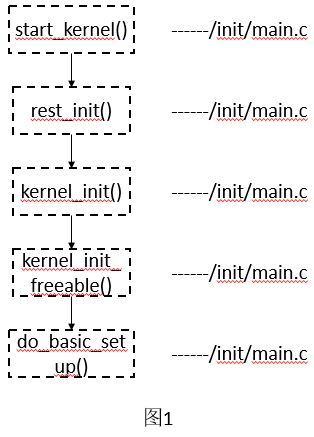

一直说自己是搞网络的，但突然发现自己在这一块有好多空白区，以前一直将关注点放在TCP上。但对于一名合格的网络编程人员来说，这似乎太局限了，所以想从整体上去认识一下网络协议栈的工作过程。想了一下，打算先从网络协议栈的初始化过程开始，打开源码一看，阿西吧，代码量有点大啊。
网络协议栈的初始化要从/init/main.c文件里的start_kernel()函数开始说起，在这个函数里初始化了很多东西，基本上OS最核心的基础设施都在这里面进行了初始化，在函数的最后调用了函数rest_init()。在rest_init()又调用了kernel_init()函数。kernel_init()主要进行系统层级的初始化工作，这个函数主要是将一些系统周边及软件中间层挂进OS及初始化，它的大部分工作都由do_basic_setup()完成。下面的图1是调用流程图。

经过上面一系列的初始化，还有网络设备没有涉及到，但CPU子系统已启动并运行，并且内存和进程管理都正常工作。由于我们的关注点是网络协议栈的初始化，而不是整个内核的初始化，所以上面都只是简要的介绍了下。下面就要开始表演真正的技术了。